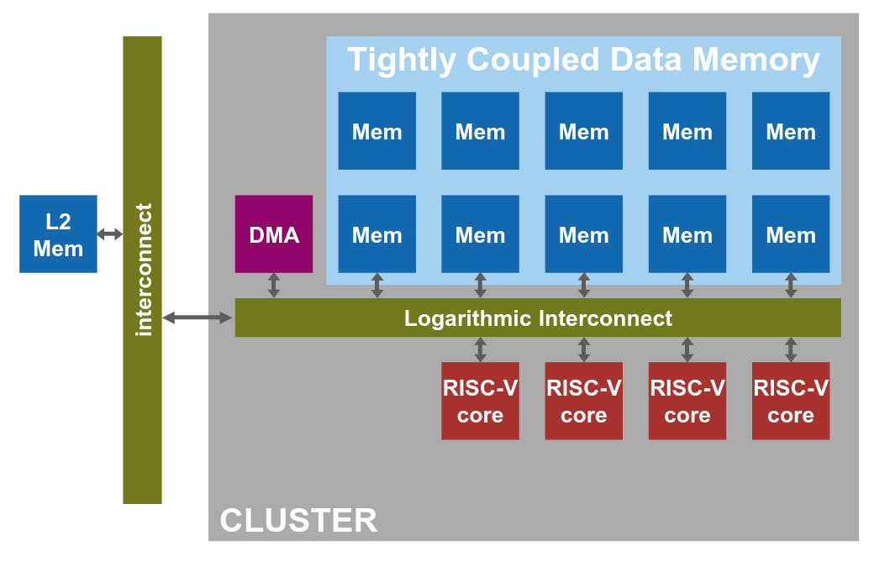
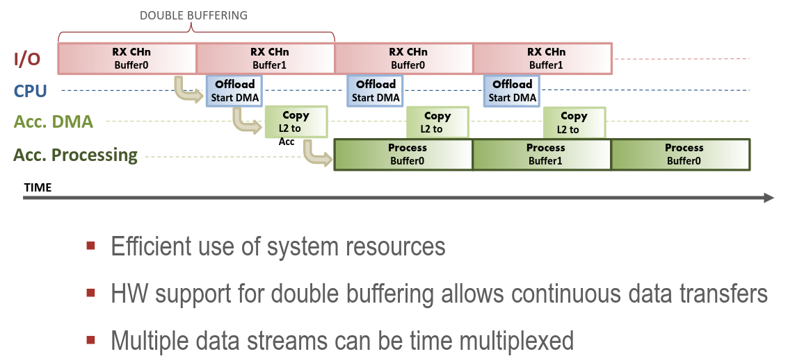

Multi processor extensions

The DMA engine is a dedicated engine optimized for integration of processors. 
How the whole process work:
- a core initiate the DMA transfer
- the DMA copies data from memory to the processor memory
- the core get notified from the DMA
- the cores works on the data
- the data get copied back from the DMA
Usually, all of this is done concurrently.
To analyse how much is the speed-up when we increase the number of parallel threads, we can use the following formula:
In the formula we denote:
- with the cost payed for forking the main process into smaller ones
- with the cost payed for joining the forked threads into one
- with the number of operation that can't be parallelized
- with the number of cycle that can be parallelized
- with the number of chunks in which the parallelizable code has been divided